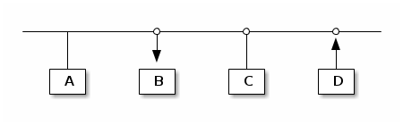

entendiendo la red
index | OSiUX | blog | docs | charlas | rss
Topología, redes y Subredes
centralizada

descentralizada

en malla o mesh

Asignación de IPs por medio de DHCP
- DHCP server
- DHCP client
Red de 4 equipos

B dice, necesito una IP!
- mensaje:
DHCPDISCOVER - protocolo: UDP
- puerto destino: 67
- dirección física: 01:12:23:34:45:bb

D dice, yo te puedo dar IP!
- mensaje:
DHCPOFFER - dirección física: 01:12:23:34:45:dd
- dirección IP: 192.168.10.102
- gateway: 192.168.10.1
- dns primario: 8.8.8.8
- dns secundario: 8.8.4.4

B dice, confirmo recepción!
- mensaje:
DHCPREQUEST

D dice, confirmo confirmación!
- mensaje:
DHCPACK

Resolución de nombres de dominios DNS
host localhost
localhost.lan has address 127.0.0.1
dig osiux.com
; <<>> DiG 9.9.5-4.2-Debian <<>> osiux.com ;; global options: +cmd ;; Got answer: ;; ->>HEADER<<- opcode: QUERY, status: NOERROR, id: 29452 ;; flags: qr rd ra ad; QUERY: 1, ANSWER: 1, AUTHORITY: 0, ADDITIONAL: 0 ;; QUESTION SECTION: ;osiux.com. IN A ;; ANSWER SECTION: osiux.com. 2275 IN A 198.23.230.106 ;; Query time: 3 msec ;; SERVER: 10.254.111.239#53(10.254.111.239) ;; WHEN: Sat Mar 28 16:06:38 ART 2015 ;; MSG SIZE rcvd: 43
viendo un paquete de query dns
tcpdump -r dns-query.pcap -nvX
analizando un paquete de query dns
tshark -r dns-query.pcap -VO dns
capturar consultas al dns
ssh root@linksys '/usr/sbin/tcpdump -i br0 -s 0 -w - dst port 53' >linksys.pcap
ranking de dns
tcpdump -r linksys.pcap -c 2000 -nnnA dst port 53 | \
egrep -o "A+\? .*\." | sed s/".$"//g | awk '{print $2}' | \
egrep -v "(osiux|fbcdn|akamai)" | sort | uniq -c | sort -nr | head
| 47 | www.facebook.com |
| 42 | dns.msftncsi.com |
| 41 | su.ff.avast.com |
| 37 | ssl.google-analytics.com |
| 37 | ipv6.msftncsi.com |
| 32 | www.habbo.es |
| 26 | imap.googlemail.com |
| 21 | dynamic.zoneedit.com |
| 19 | www.msftncsi.com |
| 18 | kiwwwi.com.ar |
Sniffers nmap, dsniff
nmap
nmap -sV --open 192.168.10.0/24 -p22 | head
Túneles y Redes Privadas Virtuales VPN
Redireccionar puertos con ssh
ssh -L 2525:localhost:25 osiux.com
Proxy Socks mediante ssh
ssh -D 9090 osiux.com
Tunel reverso con ssh
ssh -R 12345:localhost:22 osiux.com
Cómo saber la IP de un equipo?
B dice, cuál es la IP de D?
- Se que D es 00:14:d1:18:4a:dd
- Yo soy B y mi mac es 00:14:d1:18:4a:bb
- Todos reciben paquete ARP por difusión

D contesta, mi IP es 10.4.14.225

Quénes están en esta red?
sudo arp-scan --interface eth0 --localnet
pingueando
ping -c 5 127.0.0.1
PING 127.0.0.1 (127.0.0.1) 56(84) bytes of data. 64 bytes from 127.0.0.1: icmp_seq=1 ttl=64 time=0.042 ms 64 bytes from 127.0.0.1: icmp_seq=2 ttl=64 time=0.039 ms 64 bytes from 127.0.0.1: icmp_seq=3 ttl=64 time=0.044 ms 64 bytes from 127.0.0.1: icmp_seq=4 ttl=64 time=0.046 ms 64 bytes from 127.0.0.1: icmp_seq=5 ttl=64 time=0.045 ms --- 127.0.0.1 ping statistics --- 5 packets transmitted, 5 received, 0% packet loss, time 3997ms rtt min/avg/max/mdev = 0.039/0.043/0.046/0.004 ms
capturando pings
sudo tcpdump -i lo -nnnt -c 5 icmp
viendo un ping
sudo tcpdump -i lo -nnntvvX -c 1 -e icmp
00:00:00:00:00:00 > 00:00:00:00:00:00, ethertype IPv4 (0x0800), length 98: (tos 0x0, ttl 64, id 0, offset 0, flags [DF], proto ICMP (1), length 84)
127.0.0.1 > 127.0.0.1: ICMP echo request, id 4177, seq 329, length 64
0x0000: 4500 0054 0000 4000 4001 3ca7 7f00 0001 E..T..@.@.<.....
0x0010: 7f00 0001 0800 a68d 1051 0149 e754 5e51 .........Q.I.T^Q
0x0020: 022f 0d00 0809 0a0b 0c0d 0e0f 1011 1213 ./..............
0x0030: 1415 1617 1819 1a1b 1c1d 1e1f 2021 2223 .............!"#
0x0040: 2425 2627 2829 2a2b 2c2d 2e2f 3031 3233 $%&'()*+,-./0123
0x0050: 3435 3637 4567
traceroute
traceroute -m 100 216.81.59.173
traceroute to 216.81.59.173 (216.81.59.173), 100 hops max, 60 byte packets 1 leosia.lan (10.254.111.239) 1.640 ms 1.595 ms 1.579 ms 2 10.4.14.225 (10.4.14.225) 3.329 ms 5.220 ms 5.214 ms 3 1-212-126-200.fibertel.com.ar (200.126.212.1) 25.004 ms 25.231 ms 32.030 ms 4 * * * 5 * * * 6 * * * 7 73-164-89-200.fibertel.com.ar (200.89.164.73) 18.445 ms 109-165-89-200.fibertel.com.ar (200.89.165.109) 15.037 ms 145-164-89-200.fibertel.com.ar (200.89.164.145) 15.821 ms 8 130-165-89-200.fibertel.com.ar (200.89.165.130) 14.268 ms 23.929 ms 23.838 ms 9 222-165-89-200.fibertel.com.ar (200.89.165.222) 26.522 ms 24.973 ms 19.260 ms 10 xe-1-2-2.ar3.eze1.gblx.net (208.178.244.213) 17.765 ms 17.596 ms 21.649 ms 11 po3-20G.ar2.MIA2.gblx.net (67.16.139.18) 175.896 ms 148.889 ms po2-30G.ar2.MIA2.gblx.net (67.17.106.162) 172.247 ms 12 xe-0-3-0.mia10.ip4.tinet.net (213.200.84.37) 160.827 ms 173.191 ms 161.483 ms 13 xe-5-3-2.atl11.ip4.gtt.net (89.149.128.113) 160.288 ms xe-2-1-0.atl11.ip4.gtt.net (89.149.128.25) 152.378 ms 163.302 ms 14 * * * 15 * * * 16 * * * 17 * * * 18 * * * 19 * * * 20 * * * 21 * * * 22 * * * 23 * * * 24 * * * 25 * * * 26 * * * 27 * * * 28 * * * 29 * * * 30 * * * 31 * * * 32 * * * 33 * * * 34 * * * 35 * * * 36 * * * 37 * * * 38 * * * 39 * * * 40 * * * 41 * * * 42 * * * 43 * * * 44 * * * 45 * * * 46 * * * 47 * * * 48 * * * 49 * * * 50 * * * 51 * * * 52 * * * 53 * * * 54 * * * 55 * * * 56 * * * 57 * * * 58 * * * 59 * * * 60 * * * 61 * * * 62 * * * 63 * * * 64 * * * 65 * * * 66 * * * 67 * * * 68 * * * 69 * * * 70 * * * 71 * * * 72 * * * 73 * * * 74 * * * 75 * * * 76 * * * 77 * * * 78 * * * 79 * * * 80 * * * 81 * * * 82 * * * 83 * * * 84 * * * 85 * * * 86 * * * 87 * * * 88 * * * 89 * * * 90 * * * 91 * * * 92 * * * 93 * * * 94 * * * 95 * * * 96 * * * 97 * * * 98 * * * 99 * * * 100 * * *
traceroute -m 255 obiwan.scrye.net | awk {'print $2'}
protocolos


Qué tiene un paquete TCP/IP?
+------------------------+--------------------------+ | MAC origen fe:ca:fe:ca | MAC destino ca:fe:ca:fe | +------------------------+--------------------------+ | IP origen 192.168.1.22 | IP destino 96.8.118.129 | +---------------------------------------------------+ | Puerto origen 45678 | Puerto destino: 80 | +------------------------+--------------------------+ | Nro Secuencia 12345 | Nro ACK | +---+---+---+---+---+----+--------------------------+ | U | A | P | R | S | F | GET / HTTP/1.0 | | R | C | S | S | Y | I | | | G | K | H | T | N | N | | +---+---+---+---+---+---+---------------------------+
Ethernet header
| |1 |2 |3 | |0|1|2|3|4|5|6|7|8|9|0|1|2|3|4|5|6|7|8|9|0|1|2|3|4|5|6|7|8|9|0|1| +-+-+-+-+-+-+-+-+-+-+-+-+-+-+-+-+-+-+-+-+-+-+-+-+-+-+-+-+-+-+-+-+ | Hardware type | Protocol type | +---------------+---------------+-------------------------------+ |Hw address len.|Pr address len.| Opcode | +---------------+---------------+-------------------------------+ | Source hardware address | +---------------------------------------------------------------+ | Source protocol address | +---------------------------------------------------------------+ | Destination hardware address | +---------------------------------------------------------------+ | Destination protocol address | +---------------------------------------------------------------+ | Data | +---------------------------------------------------------------+
IP header
| |1 |2 |3 | |0|1|2|3|4|5|6|7|8|9|0|1|2|3|4|5|6|7|8|9|0|1|2|3|4|5|6|7|8|9|0|1| +-+-+-+-+-+-+-+-+-+-+-+-+-+-+-+-+-+-+-+-+-+-+-+-+-+-+-+-+-+-+-+-+ |Version| IHL | Diff.Services | Total length | +-------+-------+---------------+-----+-------------------------+ | Identification |Flags| Fragment offset | +---------------+---------------+-----+-------------------------+ | TTL | Protocol | Header checksum | +---------------+---------------+-------------------------------+ | Source IP address | +---------------------------------------------------------------+ | Destination IP address | +---------------------------------------------------------------+ | Options and padding | +---------------------------------------------------------------+
UPD header
| |1 |2 |3 | |0|1|2|3|4|5|6|7|8|9|0|1|2|3|4|5|6|7|8|9|0|1|2|3|4|5|6|7|8|9|0|1| +-+-+-+-+-+-+-+-+-+-+-+-+-+-+-+-+-+-+-+-+-+-+-+-+-+-+-+-+-+-+-+-+ | Source Port | Destination Port | +-------------------------------+-------------------------------+ | Length | Checksum | +-------------------------------+-------------------------------+ | Data | +---------------------------------------------------------------+
TCP header
| |1 |2 |3 | |0|1|2|3|4|5|6|7|8|9|0|1|2|3|4|5|6|7|8|9|0|1|2|3|4|5|6|7|8|9|0|1| +-+-+-+-+-+-+-+-+-+-+-+-+-+-+-+-+-+-+-+-+-+-+-+-+-+-+-+-+-+-+-+-+ | Source Port | Destination Port | +-------------------------------+-------------------------------+ | Sequence Number | +-------------------------------+-------------------------------+ | Acknowledgment Number | +-------+-----+-----+-+-+-+-+-+-+-------------------------------+ |dOffset|rsrvd| ECN |U|A|P|R|S|F| Window | | | | |R|C|S|S|Y|I| | | | | |G|K|H|T|N|N| | +-------+-----+-----+-+-+-+-+-+-+-------------------------------+ | Checksum | Urgent Pointer | +-------------------------------+-------------------------------+ | Options and padding | +---------------------------------------------------------------+ | Data | +---------------------------------------------------------------+
ChangeLog
- simplifico y hago correcciones varias
- corrijo gráficos ascii-art
- primer borrador general